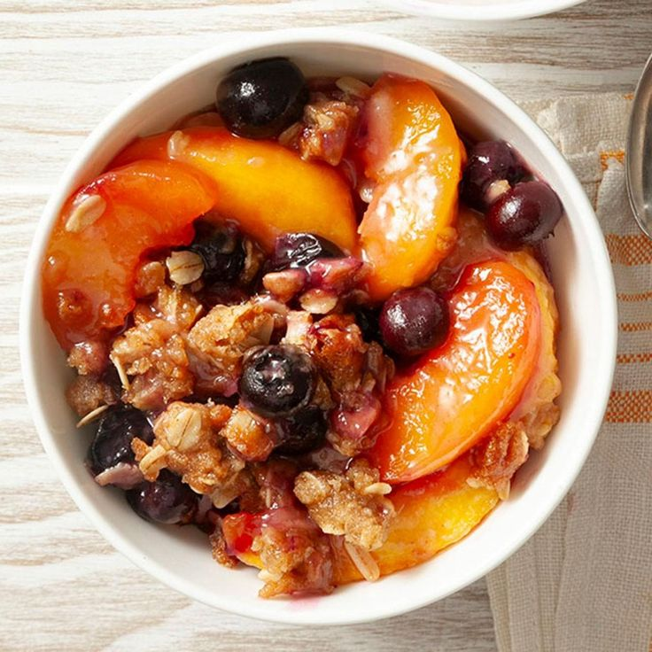

PEACH CRISP

INGREDIENTS
8 fresh peaches - peeled, pitted and sliced into thin wedges
¼ cup white sugar
¼ cup brown sugar
¼ teaspoon ground cinnamonr
⅛ teaspoon ground nutmeg
1 teaspoon fresh lemon juice
12 teaspoons cornstarch
1 cup all-purpose flour
¼ cup white sugar
¼ cup brown sugar
1 teaspoon baking powder
½ teaspoon salt
6 tablespoons unsalted butter, chilled and cut into small pieces
¼ cup boiling water
3 tablespoons white sugar
1 teaspoon ground cinnamon
INSTRUCTIONS
-
Gather all ingredients.
-
Preheat the oven to 425 degrees F (220 degrees C).
-
Combine peaches, 1/4 cup white sugar, 1/4 cup brown sugar, 1/4 teaspoon cinnamon, nutmeg, lemon juice, and cornstarch in a large bowl; toss to coat evenly, and pour into a 2-quart baking dish. Bake in preheated oven for 10 minutes.
-
Meanwhile, combine flour, 1/4 cup white sugar, 1/4 cup brown sugar, baking powder, and salt in a large bowl. Blend in butter with your fingertips or a pastry blender until mixture resembles coarse meal. Stir in water until just combined.
-
Remove peaches from oven, and drop spoonfuls of topping over them.
-
Mix 3 tablespoons white sugar and 1 teaspoon cinnamon together in a small bowl; sprinkle over entire cobbler.
-
Bake in the preheated oven until topping is golden, about 30 minutes.